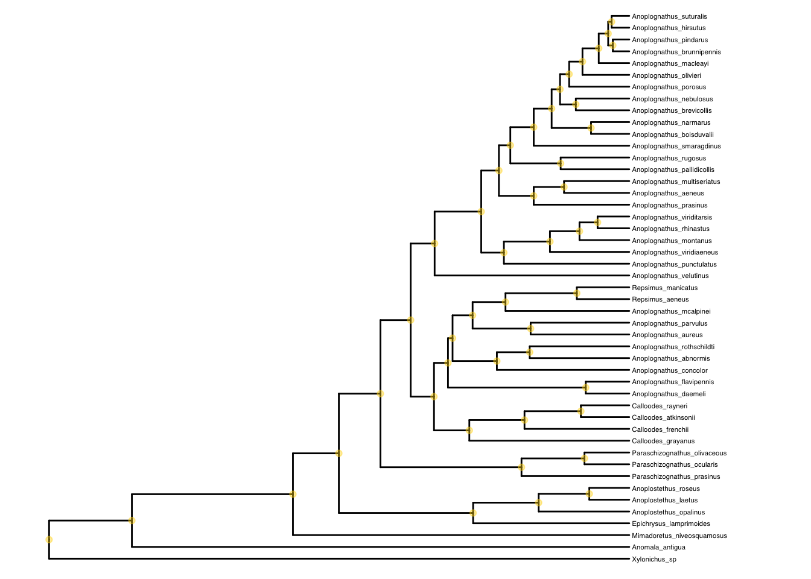

Polarisation PGLS
In this script we study the Polarization trait corrected by phylogeny.
Setting up
Libraries sourced from an additional script
source("./MacroEcol_1_Libraries.R")We imported the data obtained from previous steps.
We first aggregated the polarization and environment data to get one value per species for each variable
RPDataAgg <- read.csv("../Data/FromCode/PolarzElytraRefl.csv")[-1]
head(RPDataAgg)## ind R_ALL R_VIS R_NIR Res size phylogeny_name
## 1 abno01 24.36959 15.194950 32.37499 -9.8258343 1.5390 Anoplognathus_abnormis
## 2 abno02 30.17203 17.865117 40.90967 -3.9177421 1.6120 Anoplognathus_abnormis
## 3 anom01 17.25955 2.229028 30.33292 0.8864166 1.7630 Anomala_antigua
## 4 anom02 19.93132 7.888188 30.40910 -4.6042095 1.7675 Anomala_antigua
## 5 atki01 15.52166 6.194366 23.61734 -9.7297912 2.4590 Calloodes_atkinsonii
## 6 atki02 18.73437 6.636925 29.23785 -4.5446134 2.0180 Calloodes_atkinsonii
## PC1 PC2 spp ElytrPol
## 1 -2.1441633 0.07156382 abno 0.05631758
## 2 -1.8227362 0.16083346 abno 0.07228979
## 3 -2.3016135 -2.27652672 anom 0.13646753
## 4 -0.3855034 -1.15167811 anom 0.18547191
## 5 -2.7414058 1.08031739 atki 0.30583122
## 6 -2.7414058 1.08031739 atki 0.30355419RPDAgg1 <-
RPDataAgg %>%
dplyr::select(-ind, -spp) %>%
dplyr::select(phylogeny_name, everything()) %>%
dplyr::group_by(phylogeny_name) %>% # group
dplyr::summarise(across(everything(), list(mean))) # mean
# Convert to a data frame for the comparative.data function
RPDAgg1 <- as.data.frame(RPDAgg1)
head(RPDAgg1)## phylogeny_name R_ALL_1 R_VIS_1 R_NIR_1 Res_1 size_1
## 1 Anomala_antigua 18.59543 5.058608 30.37101 -1.8588965 1.76525
## 2 Anoplognathus_abnormis 27.27081 16.530033 36.64233 -6.8717882 1.57550
## 3 Anoplognathus_aeneus 22.10221 10.404140 32.27222 -5.2159832 3.11250
## 4 Anoplognathus_aureus 42.63349 34.727230 49.54375 -11.8705985 1.71400
## 5 Anoplognathus_boisduvalii 31.14445 17.303047 43.21203 -1.0624889 2.60540
## 6 Anoplognathus_brevicollis 27.43900 12.869292 40.14934 0.2362219 2.51400
## PC1_1 PC2_1 ElytrPol_1
## 1 -1.343558 -1.7141024 0.16096972
## 2 -1.983450 0.1161986 0.06430368
## 3 -1.903878 0.4191886 0.11204259
## 4 -3.493997 -0.4335432 0.20560559
## 5 -1.635325 -0.9220386 0.08846901
## 6 -1.145208 -3.6269193 0.08712699names(RPDAgg1) <- c(
"phylogeny_name",
"TOT", "VIS", "NIR", "Res", "size",
"PC1", "PC2", "Pol"
)
# Modify to make it compatible with tree tips
RPDAgg <- as.data.frame(RPDAgg1) # create new data frame
rownames(RPDAgg) <- RPDAgg[, 1] # make species the row names
RPDAgg <- RPDAgg[, 2:length(RPDAgg)] # eliminate spp name (redundant)We separated it into different data frames which is useful for plotting
names(RPDAgg) <- c(
"TOT", "VIS", "NIR", "Res", "size",
"PC1", "PC2", "Pol"
)
TOTdf <- RPDAgg %>% dplyr::select(TOT)
VISdf <- RPDAgg %>% dplyr::select(VIS)
NIRdf <- RPDAgg %>% dplyr::select(NIR)
Resdf <- RPDAgg %>% dplyr::select(Res)
PC1df <- RPDAgg %>% dplyr::select(PC1)
PC2df <- RPDAgg %>% dplyr::select(PC2)
Sizdf <- RPDAgg %>% dplyr::select(size)
Poldf <- RPDAgg %>% dplyr::select(Pol)And we imported the phylogeny from a .nwk file which contains 2000 phylogenetic trees. This allows us to test our hypothesis in multiple trees and not only on the MCC tree. This way, we account for any uncertainty in unresolved tips of our phylogeny.
# Phylogeny
trees <- ape::read.tree("../Data/XMAS_mat2b_bst2ef_set23nn2_pinct.nwk")We created the subsets we need to test our hypothesis
PDVIS <-
RPDAgg %>%
dplyr::select(-TOT, -NIR, -Res) %>%
dplyr::rename("Reflectance" = VIS) # keep only visible reflectivity
PDPol <-
RPDAgg %>%
dplyr::select(-TOT, -NIR, -Res, -VIS) %>%
dplyr::rename("Polarization" = Pol) # keep only polarizationPlot in Tree
Question
Chiral structures are supposed to be well conserved within scarabs. Thus, abscense or low polarization should be unusual and perhaps clustered in only a few branches of the phylogenetic tree.
Does the degree of polarization cluster according to phylogeny?
# read the tree
MCCtree.raw <-
ape::read.nexus("../Data/xmas_mat2b_bst2ef_set23nn2_pinct_med.tre")
# Prune extra spp in the tree, not contain in the test sample
species.MCC <- as.data.frame(unique(RPDataAgg$phylogeny_name))
# Convert to "row names" (required for following steps)
row.names(species.MCC) <- species.MCC[, 1]
# Make sure the names in data set and tree match
temp.MCC <- name.check(MCCtree.raw, species.MCC)
# This step would be neccesary if the tips had been different.
# MCCtree <- drop.tip(MCCtree.raw, temp.MCC$tree_not_data)
# Instead, changed the name
MCCtree <- MCCtree.raw
# create phylogeny object for ggtree()
phylo.MCC <- ggtree(MCCtree, layout = "rectangular") + geom_tiplab(size = 1.5)
# set xlim
phylo.MCC + xlim(0, 25) +
geom_nodepoint(col = "gold", alpha = 0.4)
Plot the traits on the tree
The values that we include in this plot has to be the average between individuals, since there is only one branch per species.
# create a MCC tree without tip names for the plot
tree_only <- ggtree(MCCtree, layout = "rectangular")
# create heat map columns
# Note: log transforms increase contrast for visualization purposes
# Add Polariz
p0 <- gheatmap(tree_only, Poldf,
width = 0.05, low = "gray90", high = "black",
font.size = 2,
colnames_position = "bottom", colnames_angle = 0,
colnames_offset_x = 0, colnames_offset_y = -0.5,
legend_title = "Pol"
)# Add Reflectance
# VIS
p3.scale <- p0 + new_scale_fill() # add new scale for second variable
p3 <- gheatmap(p3.scale, log(VISdf),
offset = 1.5, # to avoid overlapping with p1
width = 0.05, low = "#1b9e77", high = "#FFFFBF",
font.size = 2,
colnames_position = "bottom", colnames_angle = 0,
colnames_offset_x = 0, colnames_offset_y = -0.5,
legend_title = "VIS"
)
# NIR
p4.scale <- p3 + new_scale_fill() # add new scale for second variable
p4 <- gheatmap(p4.scale,
log(
NIRdf + # get log to bring them closer to each other
(abs((min(NIRdf))) + 1) # make them all positive
), # this correction allows better visualization
offset = 3,
width = 0.05, low = "#88419d", high = "#edf8fb",
font.size = 2,
colnames_position = "bottom", colnames_angle = 0,
colnames_offset_x = 0, colnames_offset_y = -0.5,
legend_title = "NIR"
)
p4Questions
Phylogeny
Question
Do visible reflectivity and polarization evolve separately?
If the two evolve together their correlation should dissapear when after applying the phylogenetic correction and the phylogenetic signal in these traits would be high
Tests
MCC tree
VIS PGLS in the MCC
Create the data frame of comparative data
comp_data <- comparative.data(
phy = MCCtree,
data = RPDAgg1, # aggregated data without the spp in the row names
names.col = "phylogeny_name", # contains the column phylogeny name
vcv = TRUE,
na.omit = FALSE, warn.dropped = TRUE
)Establish the model
pglsPDVIS <- pgls(VIS ~ Pol,
data = comp_data, param.CI = 0.95, lambda = "ML"
)
summary(pglsPDVIS)##
## Call:
## pgls(formula = VIS ~ Pol, data = comp_data, lambda = "ML", param.CI = 0.95)
##
## Residuals:
## Min 1Q Median 3Q Max
## -5.3094 -2.0179 -0.5717 0.6327 4.3905
##
## Branch length transformations:
##
## kappa [Fix] : 1.000
## lambda [ ML] : 0.774
## lower bound : 0.000, p = 1
## upper bound : 1.000, p = 0.050469
## 95.0% CI : (NA, NA)
## delta [Fix] : 1.000
##
## Coefficients:
## Estimate Std. Error t value Pr(>|t|)
## (Intercept) 12.5980 5.3203 2.3679 0.02224 *
## Pol 7.7967 9.4632 0.8239 0.41434
## ---
## Signif. codes: 0 '***' 0.001 '**' 0.01 '*' 0.05 '.' 0.1 ' ' 1
##
## Residual standard error: 2.29 on 45 degrees of freedom
## Multiple R-squared: 0.01486, Adjusted R-squared: -0.007031
## F-statistic: 0.6788 on 1 and 45 DF, p-value: 0.4143Test phylogenetic signal using Pagel’s lambda:
Phylogenetic signal is high in VIS reflectivity.
pagelPDVIS <- PDVIS$Reflectance # Define which trait you want to test
names(pagelPDVIS) <- rownames(PDVIS) # Row names = tree tips
phylosig(MCCtree, pagelPDVIS, method = "lambda", test = TRUE, nsim = 999)##
## Phylogenetic signal lambda : 0.823323
## logL(lambda) : -158.392
## LR(lambda=0) : 0.765898
## P-value (based on LR test) : 0.381489# nsim = 999 means testing with 999 randomizationsPhylogenetic signal is high for Polarization.
pagelPDPol <- PDVIS$Pol # Define which trait you want to test
names(pagelPDPol) <- rownames(PDVIS) # Row names = tree tips
phylosig(MCCtree, pagelPDPol, method = "lambda", test = TRUE, nsim = 999)##
## Phylogenetic signal lambda : 0.955169
## logL(lambda) : 40.0202
## LR(lambda=0) : 28.1436
## P-value (based on LR test) : 0.000000112637# nsim = 999 means testing with 999 randomizations Conclusion
High visible reflectivity and polarization did not evolve independently. They do cluster according to phylogeny.
NIR PGLS in the MCC
The data frame of comparative data is the same as for visible light
pglsPDNIR <- pgls(NIR ~ Pol,
data = comp_data, param.CI = 0.95, lambda = "ML"
)
summary(pglsPDNIR)##
## Call:
## pgls(formula = NIR ~ Pol, data = comp_data, lambda = "ML", param.CI = 0.95)
##
## Residuals:
## Min 1Q Median 3Q Max
## -6.513 -2.119 1.230 2.693 8.576
##
## Branch length transformations:
##
## kappa [Fix] : 1.000
## lambda [ ML] : 0.802
## lower bound : 0.000, p = 0.42414
## upper bound : 1.000, p = 0.11061
## 95.0% CI : (NA, NA)
## delta [Fix] : 1.000
##
## Coefficients:
## Estimate Std. Error t value Pr(>|t|)
## (Intercept) 46.8842 8.4462 5.5509 0.000001442 ***
## Pol -22.6554 14.6475 -1.5467 0.1289
## ---
## Signif. codes: 0 '***' 0.001 '**' 0.01 '*' 0.05 '.' 0.1 ' ' 1
##
## Residual standard error: 3.604 on 45 degrees of freedom
## Multiple R-squared: 0.05048, Adjusted R-squared: 0.02938
## F-statistic: 2.392 on 1 and 45 DF, p-value: 0.1289Test phylogenetic signal using Pagel’s lambda: Pending…
VIS subset PGLS MCC
We need to subset the data frame excluding the species with composite materials: chiral and non-chiral
Polsubset <-
RPDAgg1 %>%
dplyr::filter (
phylogeny_name != "Anoplognathus_prasinus" &
phylogeny_name != "Xylonichus_sp" &
phylogeny_name != "Paraschizognathus_ocularis" &
phylogeny_name != "Paraschizognathus_olivaceous" &
phylogeny_name != "Paraschizognathus_prasinus"&
phylogeny_name != "Anoplostethus_laetus" &
phylogeny_name != "Anoplostethus_opalinus" &
phylogeny_name != "Anoplostethus_roseus" &
phylogeny_name != "Epichrysus_lamprimoides" &
phylogeny_name != "Anoplognathus_aureus" &
phylogeny_name != "Anoplognathus_parvulus"
)
Polsubset <- as.data.frame(Polsubset)Then trim the tree
# Prune extra spp in the tree, not contain in the test sample
species.MCCsub <- as.data.frame(unique(Polsubset$phylogeny_name))
# Convert to "row names" (required for following steps)
row.names(species.MCCsub) <- species.MCCsub[, 1]
# Make sure the names in data set and tree match
temp.MCCsub <- name.check(MCCtree.raw, species.MCCsub)
temp.MCCsub ## $tree_not_data
## [1] "Anoplognathus_aureus" "Anoplognathus_parvulus"
## [3] "Anoplognathus_prasinus" "Anoplostethus_laetus"
## [5] "Anoplostethus_opalinus" "Anoplostethus_roseus"
## [7] "Epichrysus_lamprimoides" "Paraschizognathus_ocularis"
## [9] "Paraschizognathus_olivaceous" "Paraschizognathus_prasinus"
## [11] "Xylonichus_sp"
##
## $data_not_tree
## character(0)# This step would be neccesary if the tips had been different.
MCCtreesub <- drop.tip(MCCtree.raw, temp.MCCsub$tree_not_data)
# create phylogeny object for ggtree()
phylo.MCC <- ggtree(MCCtreesub, layout = "rectangular") + geom_tiplab(size = 1.5)
# set xlim
phylo.MCC + xlim(0, 25) +
geom_nodepoint(col = "gold", alpha = 0.4)
Now create comparative data
comp_data_sub <- comparative.data(
phy = MCCtreesub,
data = Polsubset, # aggregated data without the spp in the row names
names.col = "phylogeny_name", # contains the column phylogeny name
vcv = TRUE,
na.omit = FALSE, warn.dropped = TRUE
)Run model
pglsPDVISsub <- pgls(VIS ~ Pol,
data = comp_data_sub, param.CI = 0.95, lambda = "ML"
)
summary(pglsPDVISsub)##
## Call:
## pgls(formula = VIS ~ Pol, data = comp_data_sub, lambda = "ML",
## param.CI = 0.95)
##
## Residuals:
## Min 1Q Median 3Q Max
## -2.6089 -0.5845 0.5978 1.3236 2.9735
##
## Branch length transformations:
##
## kappa [Fix] : 1.000
## lambda [ ML] : 0.000
## lower bound : 0.000, p = 1
## upper bound : 1.000, p = 0.0027462
## 95.0% CI : (NA, 0.879)
## delta [Fix] : 1.000
##
## Coefficients:
## Estimate Std. Error t value Pr(>|t|)
## (Intercept) 14.1864 1.2119 11.7062 0.0000000000001781 ***
## Pol -15.0346 9.5636 -1.5721 0.1252
## ---
## Signif. codes: 0 '***' 0.001 '**' 0.01 '*' 0.05 '.' 0.1 ' ' 1
##
## Residual standard error: 1.496 on 34 degrees of freedom
## Multiple R-squared: 0.06776, Adjusted R-squared: 0.04034
## F-statistic: 2.471 on 1 and 34 DF, p-value: 0.1252NIR subset PGLS MCC
pglsPDNIRsub <- pgls(NIR ~ Pol,
data = comp_data_sub, param.CI = 0.95, lambda = "ML"
)
summary(pglsPDNIRsub)##
## Call:
## pgls(formula = NIR ~ Pol, data = comp_data_sub, lambda = "ML",
## param.CI = 0.95)
##
## Residuals:
## Min 1Q Median 3Q Max
## -3.3121 -1.0519 0.6397 1.9417 3.5418
##
## Branch length transformations:
##
## kappa [Fix] : 1.000
## lambda [ ML] : 0.000
## lower bound : 0.000, p = 1
## upper bound : 1.000, p = 0.0021504
## 95.0% CI : (NA, 0.908)
## delta [Fix] : 1.000
##
## Coefficients:
## Estimate Std. Error t value Pr(>|t|)
## (Intercept) 40.5372 1.5749 25.739 < 0.00000000000000022 ***
## Pol -42.2945 12.4288 -3.403 0.001723 **
## ---
## Signif. codes: 0 '***' 0.001 '**' 0.01 '*' 0.05 '.' 0.1 ' ' 1
##
## Residual standard error: 1.945 on 34 degrees of freedom
## Multiple R-squared: 0.2541, Adjusted R-squared: 0.2321
## F-statistic: 11.58 on 1 and 34 DF, p-value: 0.001723Multiple trees
VIS PGLS in multiple trees
Function
Note that the function has to be modified for the predictors and data frame that we are using
source("6_multiple_pgls_function_A.R") # script A is for Polarization as predictorModel
MuPGLSPol1 <- Reflectance ~ PolDataset
# Add the phylogeny name again because in this function it is needed:
PDVIS2 <-
PDVIS %>%
dplyr::mutate(phylogeny_name = rownames(PDVIS)) %>%
dplyr::select(Reflectance, Pol)
PDVIS2 <- as.data.frame(PDVIS2)
head(PDVIS2)## Reflectance Pol
## Anomala_antigua 5.058608 0.16096972
## Anoplognathus_abnormis 16.530033 0.06430368
## Anoplognathus_aeneus 10.404140 0.11204259
## Anoplognathus_aureus 34.727230 0.20560559
## Anoplognathus_boisduvalii 17.303047 0.08846901
## Anoplognathus_brevicollis 12.869292 0.08712699Apply
runsPol1 <- lapply(trees, pgls_runA, model = MuPGLSPol1, dataset = PDVIS2)## ERROR : Problem with optim:52ERROR: ABNORMAL_TERMINATION_IN_LNSRCH
## ERROR : Problem with optim:52ERROR: ABNORMAL_TERMINATION_IN_LNSRCH
## ERROR : Problem with optim:52ERROR: ABNORMAL_TERMINATION_IN_LNSRCH
## ERROR : Problem with optim:52ERROR: ABNORMAL_TERMINATION_IN_LNSRCH
## ERROR : Problem with optim:52ERROR: ABNORMAL_TERMINATION_IN_LNSRCH
## ERROR : Problem with optim:52ERROR: ABNORMAL_TERMINATION_IN_LNSRCH
## ERROR : Problem with optim:52ERROR: ABNORMAL_TERMINATION_IN_LNSRCH
## ERROR : Problem with optim:52ERROR: ABNORMAL_TERMINATION_IN_LNSRCH
## ERROR : Problem with optim:52ERROR: ABNORMAL_TERMINATION_IN_LNSRCH
## ERROR : Problem with optim:52ERROR: ABNORMAL_TERMINATION_IN_LNSRCH
## ERROR : Problem with optim:52ERROR: ABNORMAL_TERMINATION_IN_LNSRCH
## ERROR : Problem with optim:52ERROR: ABNORMAL_TERMINATION_IN_LNSRCH
## ERROR : Problem with optim:52ERROR: ABNORMAL_TERMINATION_IN_LNSRCH
## ERROR : Problem with optim:52ERROR: ABNORMAL_TERMINATION_IN_LNSRCH
## ERROR : Problem with optim:52ERROR: ABNORMAL_TERMINATION_IN_LNSRCH
## ERROR : Problem with optim:52ERROR: ABNORMAL_TERMINATION_IN_LNSRCH
## ERROR : Problem with optim:52ERROR: ABNORMAL_TERMINATION_IN_LNSRCH
## ERROR : Problem with optim:52ERROR: ABNORMAL_TERMINATION_IN_LNSRCH
## ERROR : Problem with optim:52ERROR: ABNORMAL_TERMINATION_IN_LNSRCH
## ERROR : Problem with optim:52ERROR: ABNORMAL_TERMINATION_IN_LNSRCH
## ERROR : Problem with optim:52ERROR: ABNORMAL_TERMINATION_IN_LNSRCH
## ERROR : Problem with optim:52ERROR: ABNORMAL_TERMINATION_IN_LNSRCH
## ERROR : Problem with optim:52ERROR: ABNORMAL_TERMINATION_IN_LNSRCH
## ERROR : Problem with optim:52ERROR: ABNORMAL_TERMINATION_IN_LNSRCH
## ERROR : Problem with optim:52ERROR: ABNORMAL_TERMINATION_IN_LNSRCH
## ERROR : Problem with optim:52ERROR: ABNORMAL_TERMINATION_IN_LNSRCH
## ERROR : Problem with optim:52ERROR: ABNORMAL_TERMINATION_IN_LNSRCH
## ERROR : Problem with optim:52ERROR: ABNORMAL_TERMINATION_IN_LNSRCH
## ERROR : Problem with optim:52ERROR: ABNORMAL_TERMINATION_IN_LNSRCH
## ERROR : Problem with optim:52ERROR: ABNORMAL_TERMINATION_IN_LNSRCH
## ERROR : Problem with optim:52ERROR: ABNORMAL_TERMINATION_IN_LNSRCH
## ERROR : Problem with optim:52ERROR: ABNORMAL_TERMINATION_IN_LNSRCH
## ERROR : Problem with optim:52ERROR: ABNORMAL_TERMINATION_IN_LNSRCH
## ERROR : Problem with optim:52ERROR: ABNORMAL_TERMINATION_IN_LNSRCH
## ERROR : Problem with optim:52ERROR: ABNORMAL_TERMINATION_IN_LNSRCH
## ERROR : Problem with optim:52ERROR: ABNORMAL_TERMINATION_IN_LNSRCH
## ERROR : Problem with optim:52ERROR: ABNORMAL_TERMINATION_IN_LNSRCH
## ERROR : Problem with optim:52ERROR: ABNORMAL_TERMINATION_IN_LNSRCH
## ERROR : Problem with optim:52ERROR: ABNORMAL_TERMINATION_IN_LNSRCH
## ERROR : Problem with optim:52ERROR: ABNORMAL_TERMINATION_IN_LNSRCH
## ERROR : Problem with optim:52ERROR: ABNORMAL_TERMINATION_IN_LNSRCH
## ERROR : Problem with optim:52ERROR: ABNORMAL_TERMINATION_IN_LNSRCH
## ERROR : Problem with optim:52ERROR: ABNORMAL_TERMINATION_IN_LNSRCH
## ERROR : Problem with optim:52ERROR: ABNORMAL_TERMINATION_IN_LNSRCHdfPol1 <- ldply(runsPol1, data.frame)Get results
HPDinterval(as.mcmc(dfPol1))## lower upper
## estimateP1 4.3130270 11.6583362
## ts1 0.4160769 1.2995120
## ps1 0.1740678 0.6345859
## attr(,"Probability")
## [1] 0.9498978Ecology
Question
Is polarization correlated to the extracted climate variables?
PGLS in the MCC
Create the data frame of comparative data
comp_data2 <- comparative.data(
phy = MCCtree,
data = RPDAgg1, # aggregated data without the spp in the row names
names.col = "phylogeny_name", # contains the column phylogeny name
vcv = TRUE,
na.omit = FALSE, warn.dropped = TRUE
)
length(RPDAgg1$Pol)## [1] 47Establish the model
pglsPDPol <- pgls(Pol ~ PC1 + PC2 + size + PC1 * size + PC2 * size,
data = comp_data2, param.CI = 0.95, lambda = "ML"
)
summary(pglsPDPol)##
## Call:
## pgls(formula = Pol ~ PC1 + PC2 + size + PC1 * size + PC2 * size,
## data = comp_data2, lambda = "ML", param.CI = 0.95)
##
## Residuals:
## Min 1Q Median 3Q Max
## -0.073277 -0.022585 -0.000383 0.021845 0.061326
##
## Branch length transformations:
##
## kappa [Fix] : 1.000
## lambda [ ML] : 0.906
## lower bound : 0.000, p = 0.000010361
## upper bound : 1.000, p = 0.0037362
## 95.0% CI : (0.700, 0.983)
## delta [Fix] : 1.000
##
## Coefficients:
## Estimate Std. Error t value Pr(>|t|)
## (Intercept) 0.0261496 0.1457823 0.1794 0.8585
## PC1 -0.0116126 0.0501381 -0.2316 0.8180
## PC2 -0.0880322 0.0656150 -1.3416 0.1871
## size 0.0124070 0.0508827 0.2438 0.8086
## PC1:size -0.0043614 0.0217964 -0.2001 0.8424
## PC2:size 0.0295125 0.0265086 1.1133 0.2721
##
## Residual standard error: 0.03623 on 41 degrees of freedom
## Multiple R-squared: 0.2541, Adjusted R-squared: 0.1631
## F-statistic: 2.794 on 5 and 41 DF, p-value: 0.0292Polarization
pagelPDPol <- PDVIS$Pol # Define which trait you want to test
names(pagelPDPol) <- rownames(PDVIS) # Row names = tree tips
phylosig(MCCtree, pagelPDPol, method = "lambda", test = TRUE, nsim = 999)##
## Phylogenetic signal lambda : 0.955169
## logL(lambda) : 40.0202
## LR(lambda=0) : 28.1436
## P-value (based on LR test) : 0.000000112637# nsim = 999 means testing with 999 randomizationsPhylogenetic signal is high.
Conclusion
Polarization does not directly correlate with these ecological variables
PGLS in multiple trees
Function
Note that the function has to be modified for the predictors and data frame that we are using
source("7_multiple_pgls_function_B.R") # script A is for Polarization as a responseModel
MuPGLSPol2 <- Polarization ~ PC1 + PC2 + size + PC1 * size + PC2 * sizeDataset
# Add the phylogeny name again because in this function it is needed:
PDPol2 <-
PDPol %>%
dplyr::mutate(phylogeny_name = rownames(PDPol)) %>%
dplyr::select(phylogeny_name, Polarization, size, PC1, PC2)
PDPol2 <- as.data.frame(PDPol2)Apply
runsPol2 <- lapply(trees, pgls_runB, model = MuPGLSPol2, dataset = PDPol2)## ERROR : Problem with optim:52ERROR: ABNORMAL_TERMINATION_IN_LNSRCH
## ERROR : Problem with optim:52ERROR: ABNORMAL_TERMINATION_IN_LNSRCH
## ERROR : Problem with optim:52ERROR: ABNORMAL_TERMINATION_IN_LNSRCH
## ERROR : Problem with optim:52ERROR: ABNORMAL_TERMINATION_IN_LNSRCH
## ERROR : Problem with optim:52ERROR: ABNORMAL_TERMINATION_IN_LNSRCH
## ERROR : Problem with optim:52ERROR: ABNORMAL_TERMINATION_IN_LNSRCH
## ERROR : Problem with optim:52ERROR: ABNORMAL_TERMINATION_IN_LNSRCH
## ERROR : Problem with optim:52ERROR: ABNORMAL_TERMINATION_IN_LNSRCH
## ERROR : Problem with optim:52ERROR: ABNORMAL_TERMINATION_IN_LNSRCH
## ERROR : Problem with optim:52ERROR: ABNORMAL_TERMINATION_IN_LNSRCH
## ERROR : Problem with optim:52ERROR: ABNORMAL_TERMINATION_IN_LNSRCH
## ERROR : Problem with optim:52ERROR: ABNORMAL_TERMINATION_IN_LNSRCH
## ERROR : Problem with optim:52ERROR: ABNORMAL_TERMINATION_IN_LNSRCH
## ERROR : Problem with optim:52ERROR: ABNORMAL_TERMINATION_IN_LNSRCH
## ERROR : Problem with optim:52ERROR: ABNORMAL_TERMINATION_IN_LNSRCH
## ERROR : Problem with optim:52ERROR: ABNORMAL_TERMINATION_IN_LNSRCH
## ERROR : Problem with optim:52ERROR: ABNORMAL_TERMINATION_IN_LNSRCH
## ERROR : Problem with optim:52ERROR: ABNORMAL_TERMINATION_IN_LNSRCH
## ERROR : Problem with optim:52ERROR: ABNORMAL_TERMINATION_IN_LNSRCH
## ERROR : Problem with optim:52ERROR: ABNORMAL_TERMINATION_IN_LNSRCH
## ERROR : Problem with optim:52ERROR: ABNORMAL_TERMINATION_IN_LNSRCH
## ERROR : Problem with optim:52ERROR: ABNORMAL_TERMINATION_IN_LNSRCH
## ERROR : Problem with optim:52ERROR: ABNORMAL_TERMINATION_IN_LNSRCH
## ERROR : Problem with optim:52ERROR: ABNORMAL_TERMINATION_IN_LNSRCH
## ERROR : Problem with optim:52ERROR: ABNORMAL_TERMINATION_IN_LNSRCH
## ERROR : Problem with optim:52ERROR: ABNORMAL_TERMINATION_IN_LNSRCHdfPol2 <- ldply(runsPol2, data.frame)Get results
HPDinterval(as.mcmc(dfPol2))## lower upper
## estimateP1 -0.025690717 0.008274889
## ts1 -0.509394426 0.155718334
## ps1 0.633248869 0.999820279
## estimateP2 -0.133125990 -0.057155922
## tP2 -2.005107771 -0.934519892
## pP2 0.032154158 0.307340151
## estimateP3 -0.001541629 0.045712709
## tP3 -0.045144640 0.841368889
## pP3 0.442754212 0.994823859
## estimateP4 -0.012606851 0.001696777
## tP4 -0.588644372 0.082999720
## pP4 0.613639989 0.999859216
## estimateP5 0.016492367 0.046320502
## tP5 0.662117534 1.725602999
## pP5 0.061421402 0.441443841
## attr(,"Probability")
## [1] 0.949848Conclusions
- Polarization is indeed a well preserved character in this group of beetles.
- The degree of polarization does not correlate with any of the studied ecological variables.
- However, some beetles may use their chiral structures to reflect more visible light. These beetles tend to have more polarization and higher visible reflectivity.